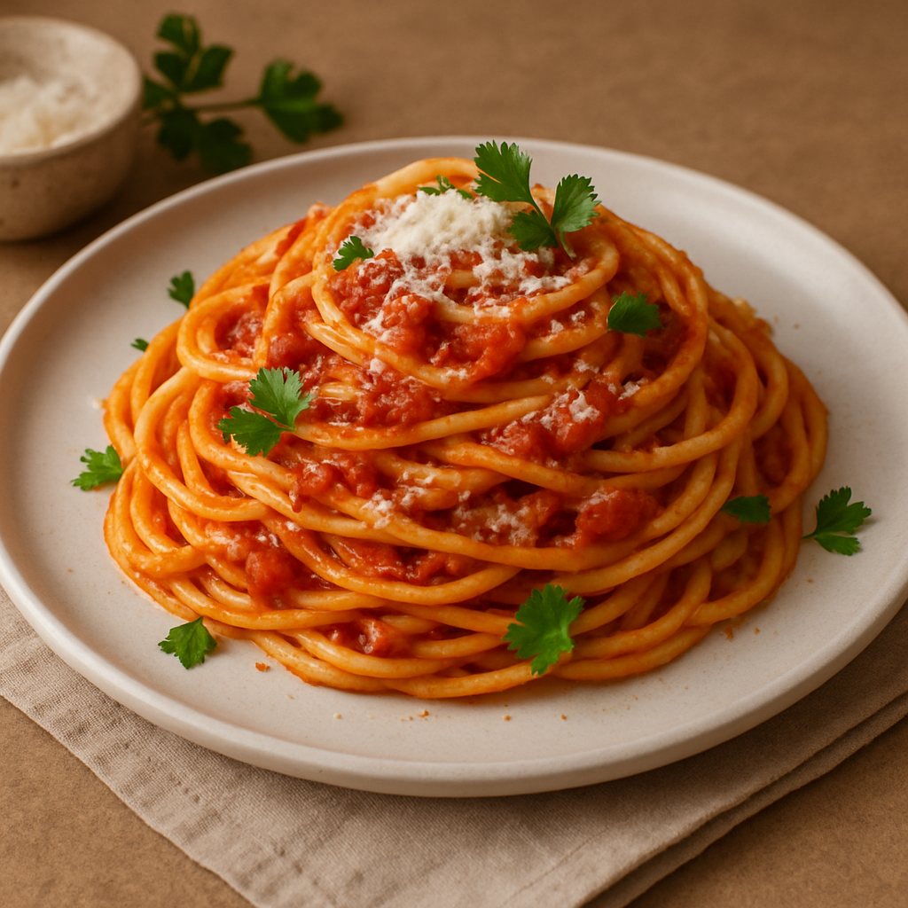

Dies ist ein Nudel-Rezept!
Zurück zur Startseite

Ein einfaches, aber köstliches italienisches Pastagericht aus goldgelben Spaghetti,
verfeinert mit einer aromatischen Tomatensauce, frischen Kräutern und Parmesan –
schnell gemacht und voller mediterraner Seele.
Zutaten:
- 400 g Spaghetti
- 2 EL Olivenöl
- 1 Zwiebel, fein gehackt
- 2 Knoblauchzehen, fein gehackt
- 2 EL Tomatenmark
- 800 g gehackte Tomaten (aus der Dose)
- 1 TL getrockneter Oregano
- Salz & Pfeffer nach Geschmack
- Frisches Basilikum (optional)
- Geriebener Parmesan zum Servieren
Schritt für Schritt Anleitung:
- Spaghetti nach Packungsanleitung in Salzwasser al dente kochen.
- Währenddessen Olivenöl in einer Pfanne erhitzen.
- Zwiebel und Knoblauch glasig dünsten.
- Tomatenmark unterrühren und kurz mitrösten.
- Gehackte Tomaten, Oregano, Salz & Pfeffer hinzufügen.
- Etwa 15–20 Minuten bei mittlerer Hitze köcheln lassen.
- Optional: Frisches Basilikum unterrühren.
- Spaghetti abgießen und mit der Sauce vermengen oder separat servieren.
- Mit frisch geriebenem Parmesan garnieren.